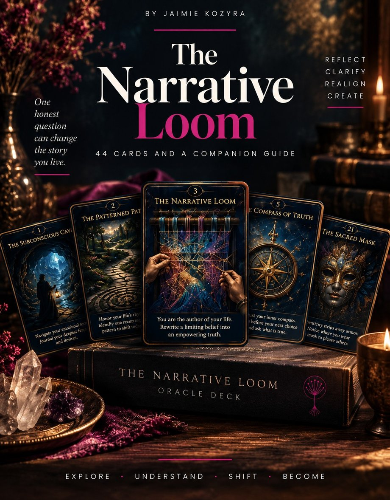
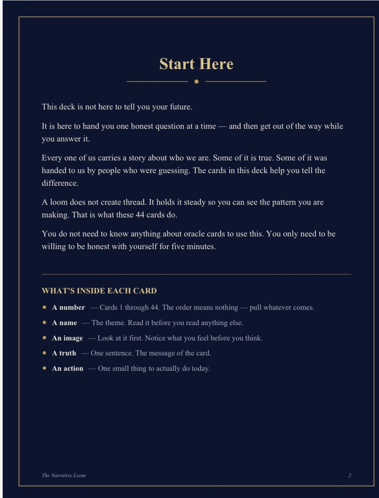

The Narrative
Loom
This deck is not here to tell you your future. It is here to hand you one honest question at a time, and then get out of the way while you answer it.
A loom does not create thread. It holds it steady so you can see the pattern you are making. That is what these 44 cards do.
You are the one holding the thread.

Inside the deck
What is on each card
- A number. One through 44. The order means nothing. Pull whatever comes.
- A name. The theme. Read it before you read anything else.
- An image. Look at it first. Notice what you feel before you think.
- A truth. One sentence. The message of the card.
- An action. One small thing to actually do today.
You do not need to know anything about oracle cards to use this. You only need to be willing to be honest with yourself for five minutes.

If you do not like the card you got
That is usually the one worth sitting with.
Do not re-pull. Ask yourself what about it landed wrong. The answer is in there.
How to use it
Three ways to lay them out
One spread at a time. More cards does not mean more clarity.
The Daily Thread
One card. One question. One small action. This is the one you will use most.
The Loom
Three cards, left to right. The thread I am pulling, what is tangling it, what to weave next. For when something feels stuck and you cannot name why.
The Turning
Two cards. What I am putting down, what I am picking up. For the start of a month, a season, or anything ending.
Be honest
When not to pull a card
- When you already know the answer and you want permission.
- When you are spiralling. Ground first, pull after.
- When you want it to make the decision for you. It will not. That part is yours.
The deck
Get the deck
Free
One payment. Delivered straight to your inbox as a digital deck and the full companion guide. Yours to keep, for your personal use.
Before you go
One last thing
I made this deck because I got tired of being told to trust the process without anyone telling me what the process actually was.
The process is this. You look at what is true, you stop arguing with it, and you change one small thing. Then you do it again tomorrow.
These cards will not heal you. They will just keep asking until you answer honestly, and that turns out to be most of it.
You are the one holding the thread. You always were.
Jaimie